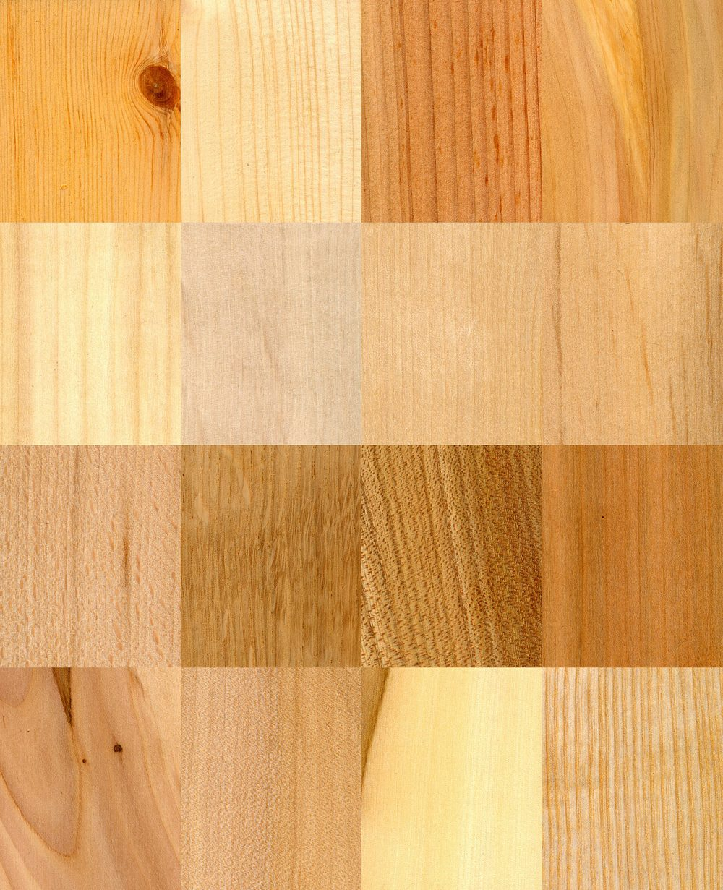

Travaux de menuiserie bois et PVC, par Julien Cornuel, artisan installé à Aix-en-Issart depuis 2016.
L'essentiel pour vous trouver et vous joindre, sans détour.
Sur le vrai site, cette galerie montre vos réalisations : quelques photos prises au téléphone suffisent.

Photo d'illustration